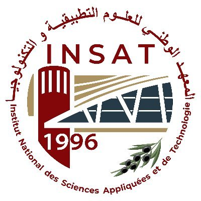
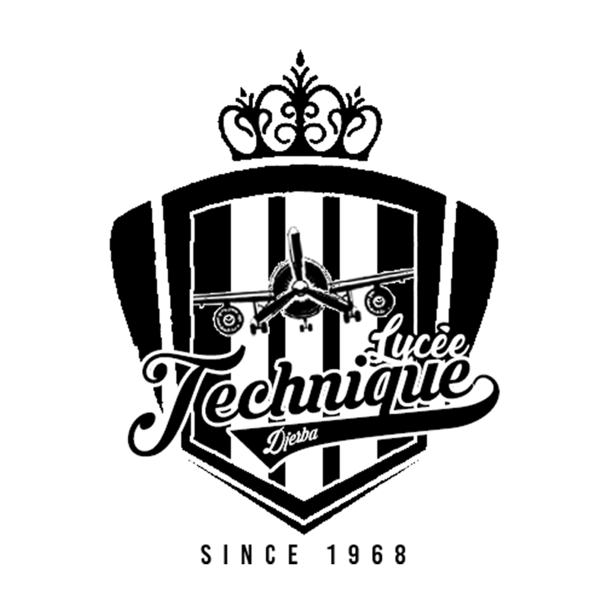

Bachelor universitaire de technologie - BUT 2 informatique (En cours)
IUT d’Orsay, France | 2024-2025
Cours associés :
- Développement efficace en Java
- Développement web : HTML, CSS, PHP
- Programmation système : Sockets, threads...
- Bases de données : SQL, PL/SQL, MySQL
- Algèbre linéaire et codage
- Statistiques
- Management des systèmes d'information
- Anglais
- Architecture des réseaux
- Conception orientée objet
- Droit des contrats et du numérique
- Communication professionnelle
Bachelor universitaire de technologie - BUT 1 informatique
IUT d’Orsay, France | 2023-2024
Cours associés :
- Développement en C++
- Développement d'interfaces web : HTML, CSS
- Système d'exploitation Linux
- Bases de données SQL
- Mathématiques
- Gestion de projet et organisation
- Anglais technique
- Développement d'applications : C#, XAML
- Développement orienté objet avec Java
- Services réseau
Année préparatoire
INSAT, Tunisie | 2022-2023
Filière : Mathématiques - Physique - Informatique
Cours associés :
- Analyse
- Algèbre
- Algorithmique et structures de données
- Programmation en C
- Systèmes logiques
- Électronique
- Optique géométrique
- Mécanique
- Électrostatique
- Thermodynamique
- Anglais
- Économie
- Droit

Baccalauréat spécialité informatique
Lycée Djerba, Tunisie | 2021-2022
Avec la mention Très Bien
Cours associés :
- Mathématiques
- Physique
- Programmation Python et algorithmique
- Bases de données : PHP et MySQL
- Développement web : HTML, CSS et JavaScript
- Anglais
